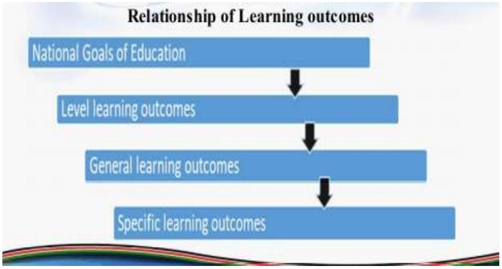

STRAND 3.0: CURRICULUM DESIGN INTERPRETATION
Strand outcomes
By the end of the strand, the teacher trainee should be able to:
- Differentiate between a syllabus and a curriculum design.
- Identify the components of the CBC curriculum designs for proper use.
- Interpret the CBC Curriculum designs for effective implementation of learning areas.
Facilitator's Notes
INTRODUCTION
- A syllabus is a concise written guideline on a specific learning or subject area of the curriculum
- It outlines and provides the objectives, the content time allocation and resources to be used during the execution of the lesson.
- A curriculum design is a detailed outline of what is to be covered in a specific learning area.
- It prescribes how learning outcomes will be actualized through suggested learning experiences, key inquiry questions and learning resources
- It provides the teacher with suggested criterion referenced assessment rubrics in every sub-strand.
Components of a curriculum design
The CBC curriculum designs for all levels have the following components;
- National Goals of Education
- Level learning outcomes
- Subjects
- Essence statement
- Learning area general outcomes
- Strands
- Themes
- Sub strands
- Specific learning outcomes
- Suggested learning experiences
- Key Inquiry Question(s)
- Core competences to be developed
- Pertinent and Contemporary issues developed
- Values
- Link to other learning areas
- Community Service Learning
- Non-formal activities to support learning
- Suggested learning and teaching resources
- Suggested Assessment methods
- Assessment rubrics.
UNIT 3.1: NATIONAL GOALS OF EDUCATION IN KENYA
An effective education system is guided by set goals and objectives. The success of such a system relies on the interrelationship between the National goals of education, Level outcomes, general and specific outcomes of a subject.
The National goals of education are the general principles and statements which spell out the aspiration of a nation to be realised through education.
They give directions to a set of detailed intentions for the present and the future. From the National goals of education, objectives for the different levels are drawn. The level outcomes are used to determine the desired knowledge, skills and attitude that should be acquired at the end of the course program. The education system of Kenya at all levels is guided by the following goals;
- Foster nationalism, patriotism, and promote national unity-Kenya's people belong to different communities, races and religions and should be able to live and interact as one people. Education should enable the learner acquire a sense of nationhood and patriotism. It should also promote peace and mutual respect for harmonious co-existence.
- Promote social, economic, technological and industrial needs for national development
Education should prepare the learner to play an effective and productive role in the nation through realization of the following needs;
- Social Needs-Education should instil social and adaptive skills in the learner for effective participation in community and national development.
- Economic Needs-Education should prepare a learner with requisite competences that support a modern and independent growing economy. This should translate into high standards of living for every individual.
- Technological and Industrial Needs-Education should provide the learner with necessary competences for technological and industrial development in tandem with changing global trends.
- Promote individual development and self-fulfilment-Education should provide opportunities for the learner to develop to the fullest potential. This includes development of one's interests, talents and character for positive contribution to the society.
- Promote sound moral and religious value-Education should promote acquisition of national values as enshrined in the Constitution. It should be geared towards developing a selfdisciplined and ethical citizen with sound moral and religious values.
- Promote social equity and responsibility-Education should promote social equity and responsibility. It should provide inclusive and equitable access to quality and differentiated education; including learners with special educational needs and disabilities. Education should also provide the learner with opportunities for shared responsibility and accountability through service learning.
- Promote respect for and development of Kenya's rich and varied cultures-Education should instil in the learner appreciation of Kenya's rich and diverse cultural heritage. The learner should value own and respect other people's culture as well as embrace positive cultural practices in a dynamic society.
- Promote international consciousness and foster positive attitudes towards other nations-Kenya is part of the interdependent network of diverse peoples and nations. Education should therefore enable the learner to respect, appreciate and participate in the opportunities within the international community. Education should also facilitate the learner to operate within the international community with full knowledge of the obligations, responsibilities, rights and benefits that this membership entails.
- Good health and environmental protection-Education should inculcate in the learner the value of physical and psychological well-being for self and others. It should promote environmental preservation and conservation, including animal welfare for sustainable development.
UNIT 3.2: THE LEVEL LEARNING OUTCOMES
- Learning outcomes Learning outcomes indicate the expected observable behavioural changes in the learner after a learning experience.
- They are drawn from the national goals of education.
- Outcomes are usually expressed through the application of knowledge, skills and attitudes.
- The 2:6:3:3:3 education system framework has been organized into 3 levels;
- Early years( Pre- primary and lower primary-5 years)
- Middle school( upper primary and junior secondary education-6 years)
- Senior school ( senior secondary education and tertiary education- 6 years)
- The Level learning outcomes are the demonstrable end results expected in learners after having gone through a specific level of CBC education, stated in general terms.
The general Level Learning Outcomes for Early Years Education;
By the end of the early year's education, the learner should be able to:
- Communicate appropriately using verbal and/or non-verbal modes
- Demonstrate basic literacy and numeracy skills
- Apply digital literacy skills for learning and enjoyment
- Apply creative and critical thinking skills in problem solving
- Practice hygiene, proper sanitation, safety and nutrition to promote health practice appropriate etiquette for interpersonal relationships
- Explore the immediate environment for learning and enjoyment
- Demonstrate acquisition of emotional, physical, spiritual, aesthetic and moral development
- Demonstrate appreciation of the country and its rich, diverse cultural heritage for harmonious living
- Exhibit appropriate organizational skills.
The Level Learning Outcomes for middle school Education;
By the end of the middle school, the learner should be able to:
- Communicate effectively in diverse contexts.
- Apply literacy, numeracy skills and logical thinking appropriately in self-expression.
- Demonstrate social skills, spiritual and moral values for peaceful co-existence.
- Explore, manipulate, manage and conserve the environment effectively for learning and sustainable development.
- Practise hygiene, appropriate sanitation and nutrition to promote health.
- Apply digital literacy skills appropriately for communication and learning.
- Demonstrate ethical behaviour and exhibit good citizenship as a civic responsibility.
- Demonstrate appreciation of the country's rich and diverse cultural heritage for harmonious coexistence
- Manage pertinent and contemporary issues in society effectively.
An illustration of The inter-relationship between the national goals of education and learning outcomes
Task 3.1: In groups Study the curriculum designs for Pre primary 1, Grade 2 and 4 and identify the level outcomes that will help in achievement of each of the national goal of education in Kenya.
UNIT 3.3: SUBJECTS
The curriculum designs for basic education have been organized into 3 categories; Pre-primary (PP1 and PP2, Primary(grade 1,2,3 4,5 and 6) and secondary (grades 7,8,9,10,11 and 12)
1.Pre-Primary subjects
This has been organized into to levels; PP1 and PP2.
- PP1 level design
The learning areas include; Language activities Mathematics activities, Environmental activities, Psychomotor activities,CRE,IRE and HRE activities.
- PP2 level design
The learning areas include; Language activities Mathematics activities, Environmental activities, Psychomotor activities,CRE,IRE and HRE activities.
2. Primary education
It has two levels; lower primary(grade 1,2 and 3) and Upper primary level (grades 4,5 and 6)
- Lower primary level subjects
The curriculum designs are organized in four volumes:
- Volume 1:Kiswahili Activities,Literacy Activities and English Activities
- Volume 2: Mathematics Activities, Environmental Activities and Hygiene and Nutrition Activities
- Volume 3:Christian Religious Education, Religious Education and Islamic Religious Education
- Volume 4: Movement and Creative Activities
- Upper primary level subjects
The subjects are grouped into four volumes;
- Volume 1: Kiswahili,English and sign languages
- Volume 2: indigenous languages, French,German,Chinese and Arabic languages
- Volume 3: Mathematics, Science, Agriculture, Home Science and Psychomotor and Health Education.
- Volume 4: Social studies, Art and Craft,music, CRE,IRE and HRE.
NOTE: In each volume one subject is presented for all grades e.g In lower primary curriculum designs in volume 1, English subject is presented for grade 1,2 and 3 before moving to the next subject.
Task 3.3: In groups Study the curriculum designs for Pre primary level,lower primary and upper primary to identify time allocation per subject at each level.
UNIT 3.4: ESSENCE STATEMENT
An essence statement gives a general overview of a learning area. It summarizes the fundamental ideas of each learning area. It also explains the rationale and justification of inclusion of the learning area in the curriculum.
The essence statement for a specific subject in different levels of learning is stated in a general way i.e it cuts across all grades within the same level for the given subject.
For example : For Middle school in English subject for Grades 4,5 and 6.The Essence statement is as follows;
English is a major language of education, information, trade, diplomacy and social networking. It is the international common tongue and the most common foreign language. Moreover, English is the dominant language in science and technology, the internet and travel. Additionally, English is an official language in Kenya and the medium of instruction from Grade Four. Therefore, a firm foundation in the language will enable the learner communicate appropriately in the national and international arena. This foundation will also enhance learning in lower secondary school.
Hence, proficiency in English is key to the realisation of the National Goals of Education, the link to the global community and the door to the worldwide information network. For this reason, the learner must be equiped with adequate oral, reading and writing competencies in English language. This will enable the learner to function competently in varied national and global communicative contexts.
During middle school, English is learnt as a second language. The learner will be engaged in tasks that enhance the acquisition and progressive application of English language skills. The emphasis in the presentation of the four language skills and grammar is to ensure they are functional. The learner will also experience the interdependence of the competences across the skills, and find the relevance of what they learn in their day- to-day contexts. Varied English language activities in Grades 4, 5, and 6 will enrich learning and empower the learner to apply acquired language competences with a lot of ease
Task 3.4: In groups Study the curriculum designs for Pre primary level,lower primary and upper primary and identify the essence statements for Mathematics and Psychomotor
UNIT 3.5: GENERAL LEARNING OUTCOMES
These learning outcomes indicate what the learner is expected to achieve in a given learning area across a given level.
For example: In English for upper primary the General Learning Outcomes are;
By the end of the Upper Primary Level, the learner should be able to:
- Listen and respond appropriately to relevant information in a variety of contexts.
- Read a variety of texts fluently, accurately and interpretively for lifelong learning.
- Use grammatical forms to communicate ideas, opinions and emotions appropriately in different settings.
- Write texts for various purposes legibly, accurately, creatively and cohesively for selfexpression.
- Apply digital literacy skills to enhance their language competency
Task 3.5: In groups study the mathematics and pychomotor curriculum designs for grade 1 and 5 and identify the general outcomes for each subjects.
UNIT 3.6: STRAND
A strand is a broad area of study within a specific learning area. It is a consistent phenomenological idea or concept, that runs through the learning area.
A strand also cuts across all levels of education. For example in English across all levels the strands are namely;
- Listening and speaking
- Reading
- Grammar in use
- Writing
Task 3.6: In groups study the mathematics curriculum designs for grade 3 and 4 and identify the strands given.
UNIT 3.7: THEMES
A theme is a topic or subject matter for discussion which help in presenting the strands and Sunday strands in a given subject i.e it will help draw context of learning experiences for each strand and substrand in in grade 4 English under the Theme of Family the learning context for listening and speaking,reading and writing will revolve around the topic of the family.
The Themes provide the learners with diverse knowledge on real life experiences. In each grade in a given subject the themes are different depending on the levels e.g in English subjects for different grades the themes are shown below;
Grade 4 English
The following themes will facilitate the learning of English in context:
- The Family
- Family Celebrations
- Etiquette
- Accidents:First Aid
- Nutrition:Balanced Diet
- Internet:Email
- Technology:Cyber Safety
- The Farm
- HIV and AIDS
- Hygiene and Sanitation
- Sports:My Favourite Game
- Clean Environment
- Money
Grade 5 English
The following themes will facilitate the learning of English in context:
- Child Rights and Responsibilities
- National Celebrations
- Etiquette -Table Manners
- Road Accidents - Prevention
- Nutrition - Traditional Foods
- Jobs and Occupations - Various Occupations
- Technology - Learning through Technology
- The Farm - Cash Crops
- Diseases - Communicable Diseases
- Leisure Time Activities
- Sports - Appreciating Talents
- Environmental Pollution
- Money - Savings and Banking
Task 3.7: In groups study the Kiswahili curriculum designs for grade 3 and 4 and identify the themes given for each level.
UNIT 3.8: SUBSTRAND AND TIME ALLOCATION
A sub-strand represents smaller concepts within the strand. Each substrand is allocated number of lessons to be taught. E.g in English grade 4, strand: Listening and speaking , substrand: Vocabulary and pronunciation is given 2 lessons.
Task 3.8: In groups study the psychomotor curriculum designs for grade 4 to identify one strand and the substrands.
UNIT 3.9: SPECIFIC LEARNING OUTCOMES
Specific learning outcomes are lesson based. Each strand/sub strand/theme in the curriculum designs has specific learning outcomes which are geared towards achieving the general learning outcomes.
Specific learning outcome should have:
- The action verb
It shows which action the learner will perform during the learning process The action verb represent the 3 levels of learning; knowledge,skill and attitude.
- Knowledge outcomes
These Measure the learner's ability to recognize or recall learned information.
They measure acquisition of facts, ideas, concepts; their application, synthesis to get new ideas and evaluation of the information.
They are stated using action verbs like; Name,identify,list,record,underline,state,define,arrange,name,relate,describe,tell,recall,memorize, recall,repeat,recognize,label,select,reproduce etc
- Skill outcomes
These measure the ability of the learner to using the knowledge acquired, a learner is able to apply it to perform certain tasks against a given standard. The standard to which a learner should perform the task is referred to as a competence.
Verbs to state these outcomes include; order,compare, contrast, Discuss, Explain, calculate,dramatize, role-play, distinguish,demonstrate,solve,prepare etc.
- Attitudinal outcomes
Measure desirable beliefs and personal attributes that a learner acquires through knowledge and skill that influence performance.
They are stated using action verbs like; include;propose,suggest,follow,emulate,model,share,work,tell,answer,practice,recite,compose,a ct,organize,initiate, Influence, display,serve, appreciate, demonstrate etc.
Examples
- Knowledge: Identify commonly used punctuation marks in written texts for effective communication
- Skill: Use commas and question marks correctly in written texts for clarity of writing
- Attitudinal : Appreciate the role of punctuation marks for clarity in writing
- Knowledge outcomes
- The object
The learning outcome also has an OBJECT, which answers the question "what" or the target of the action performed by the learner. By the end of the sub strand, the learner should be able to:
- Identify commonly used punctuation marks in written texts for effective communication
- Use commas and question marks correctly in written texts for clarity of writing
- Appreciate the role of punctuation marks for clarity in writing
- The context
Shows the place,reason or way the action will be performed by the learner. It answers the question "why", "where", "how" and "when"
Example;
By the end of the sub strand, the learner should be able to:
- Identify commonly used punctuation marks in written texts for effective communication
- Use commas and question marks correctly in written texts for clarity of writing.
- Appreciate the role of punctuation marks for clarity in writing.
What characterizes a good learning outcome?
- A good learning outcome begins with an action verb, followed by the object of the verb and a phrase that gives the context.
- Preferably only one verb is used in a learning outcome.
- Learning outcomes should be observable.
- Capable of being assessed.
- Does NOT use vague terms such as; know, understand, learn, be familiar with, be exposed to, be acquainted with, and be aware of.
NOTE: For every substrand the relevant specific learning outcomes are given.
Task 3.9: In groups study the science and technology curriculum designs for grade 4 to identify one strand and one substrand and give learning outcomes clearly showing the knowledge,skills and Attitudinal outcomes given
UNIT 3.10: KEY INQUIRY QUESTIONS
Key Inquiry Questions (KIQ) is an approach where the teacher uses question to probe learners thinking to allow them to create information using their own words and understanding.
They:
- Help to focus the learning
- Probe for deeper meaning and set the stage for further questioning
- Foster the development of critical thinking skills and higher order capabilities such as problem solving
- Allow learners to explore ideas in an open-ended, non-judgmental, meaningful and purposeful way
- Encourage collaboration amongst learners, teachers, and the community and integrates technology to support the learning process.
When writing KIQ:
- Consider the focus of your learning outcome and the topic as given in the curriculum design.
- Examine the theme or concept in the curriculum that must be addressed and brainstorm on questions that would enable learners to think about the concept without dictating the direction or outcome of their thinking
- Utilise the six typical question words: Who? What? Where? When? Why? How?
NOTE: For every substrand there are specific key inquiry questions given in the designs.
Task 3.10: In groups study the social studies curriculum designs for grade 5 to identify one strand and one substrand and give the key inquiry questions given
UNIT 3.11: LEARNING EXPERIENCES
Learning experiences comprise of activities that the learner is engaged in during the lesson. The activities may be carried out by an individual learner or as a group work activity. However, they should ultimately, enable the learner to achieve the intended specific learning outcomes of the lesson.
A learning experience is the interaction between the learner and the external conditions in the environment to which he can react.
Learning experiences enable the learner to:
- Acquire knowledge, skills and develop attitudes
- Acquire the intended competences
- Learn from one another
- Self-regulate and evaluate
- Engage deeply in the subject matter
- Reflect on the learning process
- Interact with others during the learning process
Characteristics of good learning experiences
- Problem Based Learning
- Learning activities include applied portions/projects that are directly applicable to later life/work.
- The learning activities include applied learning and problem solving.
- The teacher uses an apprentice/mentor model: the teacher provides the tools / framework and presents students with a problem, then provides guidance as needed while they work through it.
- Collaborative Learning
- The activities include interactive, small group learning experiences.
- The teacher fosters a shared sense of responsibility amongst the learners; the group gains strength through working together to learn.
- Small Group Discussion
- Learning activities include small group discussion, which encouragescritical thinking and allows interaction with peers who may have relevant knowledge or expertise.
- Authentic Tasks and Events
- Students complete real world tasks as teaching examples (e.g., determine the guilt or innocence of a suspect).
- Learning activities or projects are tied in to current events and/or include real life examples.
- Interdisciplinary Learning
- The learning activity mixes disciplines and allows students to apply one to the other.
- Team Teaching
- Teachers work together to incorporate related content in multiple courses to give students a sense of the wider context of the material.
- Class Structure
- The teacher provides good structure and guidance/instructions .
- Emotion and Engagement
- Learning activities engage the students' emotions.
- The teacher is committed to and pays attention to the individuals - understanding where they are and helping them to get to where they should be.
- The teacher incorporates the content into a clear narrative or story.
- The teacher provides creative assignments (e.g., create a documentary about a topic rather than writing a research report about it).
- The teacher demonstrates enthusiasm about teaching; he or she comes to class prepared (e.g., has case studies or good real-life examples).
- Incorporates Reflective Teaching Strategies
- Thinking about how to teach (e.g., watching yourself teach on video, practicing an activity before trying it in the classroom, gathering relevant real world stories to use) can help you provide more effective learning experiences for your students.
Selection of learning experiences
Principles of selecting Learning experiences;
- Learning is an active process in which the learner must be involved.
- Learning is affected considerably by individual goals, values and motives.
- Frequent repetition of response to a class of situations is important in learning skills.
- The wider the range of experiences presented to the learner, the more likely are the generalizations and discrimination to occur.
Factors to consider when/creteria of selecting learning experiences. The criteria for selecting learning experiences are derived from the principles of learning;
- Validity;
Learning experiences must be closely connected with the educational goals and result in changed behavior with respect to the stipulated outcomes.
They should be in line with the knowledge/skills you want the students to have at the end of the course
- Comprehensiveness;
Comprehensiveness demands that all the objectives which are stated should have corresponding experiences.
- Variety;
Variable learning experiences should be presented.
- Suitability;
The learning experiences must be closely related to the learner's needs, capacities, interests end ail other factors which condition learning.
- Balance and continuity;
Involves balancing experiences from outside with others from the learning process itself.
- Relevance
The learning experiences should have maximal relation to life.
- Number of activities
Determine how many activities are achievable within the given timeframe.
- Sequence of the activities
This involves Before Class Activities,in-class Activities and Out-of-class Activities Before Class Activities- Help students prepare for class by giving them assignments such as readings, article reviews, problems, etc.
In-Class Activities-Give students opportunities to practice the skills and knowledge learned within class discussion and give prompt feedback.
Out-of-class Activities-Allow students to reflect on what they have learned by activities.
- Environmentally safe and sustainable.
Activities should be culturally relevant and acceptable
Note: A variety of learning experiences are shown in the curriculum designs for each strand and substrand.
Task 3.11: In groups study the agriculture curriculum designs for grade 4 to identify one strand and one substrand and identify the culturally suitable learning experiences from the list.
UNIT 3.12-3.21: Values, Competencies, and Assessment
3.12: VALUES
Values are standards that guide an individual on how to respond or behave in each circumstance.
Thus, avalues influence how we feel, act and make choices in life. Today, there is a noticeable values and behavioural crisis among the general population and young people.
Many youngsters are growing up without the desired values, positive attitudes and psychosocial competencies needed to function as responsible citizens.
The primary responsibility for nurturing values rests with parents and the community, but education too has a key role to play in this regard.
The teaching of values will facilitate the achievement of the curriculum reforms' vision, particularly with respect to moulding ethical citizens'.
The Core Values in the BECF are: love, responsibility, respect, unity, peace, patriotism, social justice and integrity.
For every strand and substrand the relevant core values are given.
Task 3.12: In groups study the health and nutrition curriculum designs for grade 1 to identify one strand and one substrand and give the values given and describe how you will impart them to your learners during a lesson.
UNIT 3.13: CORE COMPETENCIES
The Core Competencies are sets of intellectual, personal, and social and emotional proficiencies that all students need in order to engage in deep, lifelong learning and apply them to fit in the 21st century world.
There are 7 Core competencies identified in CBC by KICD namely;
- Communication and collaboration.
- Critical thinking and problem solving.
- Imagination and creativity.
- Citizenship.
- Learning to learn.
- Self-efficacy.
- Digital literacy.
For every substrand there is a list of the identified core competencies
Task 3.13: In groups study the social studies curriculum designs for grade 5 to identify one strand and one substrand and give the core competencies given. Identify the achievable competencies from the list and describe how you can help learners achieve them in your lesson.
UNIT 3.14: PERTINENT AND CONTEMPORARY ISSUES (PCIs)
Children like adults are faced with a myriad of challenges owing to the legal, technological, social, cultural and economic dynamics in society.
It is important that these challenges are addressed as the overall wellbeing of a child is critical for the survival of any society.
These Areas in the Competence Based Curriculum (CBC) are referred to as Pertinent and Contemporary Areas (PCIs) formerly known as emerging/Cross-cutting Areas.
Areas that have been identified as Pertinent and Contemporary have been put into six broad categories.
- Citizenship
- Health Education
- Life Skills and Values Education
- Education for Sustainable Development (ESD)
- Learner Support programmes
- Community Service learning
- Parental Empowerment and Engagement
For every strand and substrand the relevant PCIs are given.
Task 3.14: In groups study the environmental curriculum designs for grade 1 to identify one strand and one substrand and give the PCIs given and justify the need for their inclusion in the selected strand and substrand. Describe how you will infuse them to help learners achieve them.
UNIT 3.15: COMMUNITY SERVICE LEARNING(CSL)
Community Service Learning (CSL) is an experiential learning strategy that integrates classroom learning to learning from the community to enable learners to reflect, experience and learn from the community.
It is a process where learners link personal and social development with academic and cognitive development.
The reformed curriculum has consequently introduced Community Service Learning as a component of learning that will be compulsory to all learners.
Community Service Learning will create opportunities for learners to apply the knowledge and skills acquired through the formal dimension in their community while at the same time learning from the community.
This will develop in the learner not only employability skills but also promote personal growth by strong and productive relationships with the community.
Learners will utilize the acquired knowledge, skills, values and attitudes to improve the welfare of the community.
Community Service Learning covers aspects of Citizenship, Entrepreneurship, Financial Literacy, Life Skills, Communication Skills and Research. These are given for every strand and substrand
Task 3.15: In groups study the agriculture curriculum designs for grade 5 to identify one strand and one substrand and give the CSL project given and describe how you can organize it.
UNIT 3.16: PARENTAL EMPOWERMENT AND ENGAGEMENT (PEE)
Parents, family and care-givers are a child's first and most important educator and can be a positive influence and help their child do well at school.
Parents need to be empowered and provided with useful information to assist them to better engage with their child's learning.
Parents also require to get involved in their child's learning throughout schooling.
This engagement will enable them to participate in identifying the learner's potential and contribute to nurturing it.
When parents are involved in their children's learning, it can have very positive impact on education outcomes.
Teachers should create strong partnerships with parents to ensure they get engaged in learning. They are given for every strand and substrand
Task 3.16: In groups study the environmental curriculum designs for grade 3 to identify one strand and one substrand and give the PEE activities given and describe how you can infuse them.
UNIT 3.17: NON-FORMAL LEARNING
Non-formal activities are structured learning activities that are geared towards development of affective and psychomotor dimensions of learning. Some of the non-formal activities may include: singing, dancing, reciting poems, club activities, games and debates.
These are given for every strand and substrand
Task 3.17: In groups study the environmental curriculum designs for grade 1 to identify one strand and one substrand and give the non formal learning activities given and describe how you can integrate them for learning.
UNIT 3.18: SUGGESTED LEARNING RESOURCES
Learning resources are any materials that help to facilitate the teaching and learning process. Such materials include charts, realia, models and the immediate environment.
Learning resources prompts the learners' reasoning and facilitates the development of competences such as critical thinking and problem solving, creativity and imagination, collaboration, self-efficacy among others.
They make images to last longer in the mind. When a learner correctly sees, hears, smells and touches then, he or she can put the pieces together and get the picture even without you having to explain.
These are given for every strand and substrand
Task 3.18: In groups study the science curriculum designs for grade 4 to identify one strand and one substrand and give the suggested learning resources given. From the list identify the locally available resources and how you can acquire them. Avail the resources and take photos of them in your classroom.
UNIT 3.19: LINKS TO OTHER LEARNING AREAS
Some of the competencies that are developed in one learning area can be reinforced through other learning areas for example when you teach the concept of the flag in environmental activities, it could be enhanced in the learning area of movement and creative activities where learners are expected to draw and color the national flag.
These are given for every strand and substrand
Task 3.19: In groups or pairs study the English curriculum designs for grade 4 to identify one strand and one substrand and give the link to other learning areas given and describe how you can integrate in a lesson.
UNIT 3.20: SUGGESTED ASSESSMENT METHODS
These are given for each strand and substrand. The main purpose of Competency Based Assessment is to:
- Inform teaching and learning decisions
- Establish the level of learner's competence
- Ascertain progress against the learning outcomes
- Encourage learners to make judgments about their performance
- Enhance learner motivation
- Identify where intervention, focused support or referral is required
- Make decisions regarding choice of subject, course and careers pathways.
Formative assessment or Assessment for learning (AFL) is an investigative tool to monitor the progress of an individual learner in meeting the learning outcomes in a subject or learning area. It involves gathering data during the learning process, and provides feedback to both the learner and you to help improve learning.
This approach helps build an accurate and detailed profile of your understanding of the curriculum and inform teaching so that you can provide appropriate assistance to the learner.
During assessment during a lesson a learner is assisted to develop a capacity to be independent, self-directed to set individual goals, monitor own progress/ self-assess, and reflect on his/her learning.
A learner can self-assess when you provide the learner with a clear picture of steps required to reach proficiency, a set criterion that have a variety of examples or models of decent work for comparison.
The summative assessment is carried at the end of a unit or task. It is designed to provide information on the achievement of a learner to parents, educators and learners themselves.
Some methods for assessing learner's different strands and substrands include;
- Observations
- Written tests/assignments
- Checklists: assist the teacher to determine areas of focus to enable the learner to develop relevant knowledge and skills
- Rating Scales: Use of descriptive words, such as always, usually, sometimes and never
- Questionnaires: A list of questions on various aspects of a person's situation
- Project Method: a set of activities implemented within a set timeframe
- Learners identify a need in their community where they can provide services based on what they have learned.
- Journaling: the learner keeps a record of their personal feelings, thoughts and experiences daily.
- Portifolio: a purposeful collection of work samples, self-assessments and goal statements that reflect a learner's progress.
- Assessment rubrics
They provide feedback to educators, parents and learners, about a learner's achievement to make decisions for appropriate placements or further studies.
Task 3.20: In groups or pairs study the Mathematics curriculum designs for grade 4 to identify one strand and one substrand and give the suggested assessment methods given. Identify the most suitable method for your lesson and describe how you will use it by developing an assessment tool.
UNIT 3.21: ASSESSMENT RUBRICS
A rubric is an assessment tool that clearly indicates achievement criteria across all the components of any kind of student work, from written to oral to visual.
It can be used for marking assignments, class participation etc. The CBC rubrics identify the creteria for assessment(performance indicator) and rating scale as follows;
For formative assessment the ratings are given below;
Level 1. E.E - Exceeds Expectations
Level 2. M.E - Meet Expectations
Level 3. A.E - Approaching Expectation
Level 4. B.E - Below Expectation
NOTE: The teacher allocates marks for each strand,substrand or class activity and structures the ratings into the given above creterion.
The summative assessment rating is calculated based on the average of the formative assessment ratings and is structured under the following aspects:
Level 1. E.E - Exceeds Expectations (80-100%)
Level 2. M.E - Meet Expectations (65-79%)
Level 3. A.E - Approaching Expectation (50-64%)
Level 4. B.E - Below Expectation (0-49%)
NOTE: For every substrand there is a preidentified assessment creterion given as assessment rubrics for the instructor to use when assessing the learners.
The assessment creterion given are drawn from the learning outcomes and experiences for the given substrand.
Assessment rubrics will be indicated at the end of every substrand.
Task 3.21: In groups or pairs study the Homescience and kiswahili curriculum design for grade 4 to identify one strand and one substrand and give the assessment rubric given for each subject. Prepare an assessment progress record for your learners for the strand and compile a report for the given substrand in the given subjects.